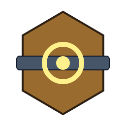
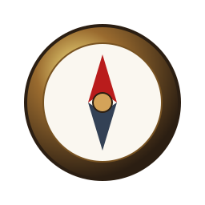
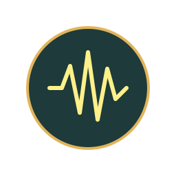
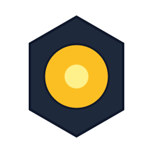
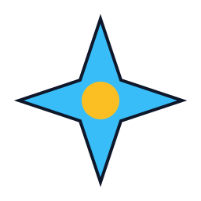

EN

#001


棱镜圣殿 · 扇形榫卯试炼规则
本试炼台采用
L-A11 情境 HUD 与扇形手牌
及
零母语沉浸
：
左侧铁栅闸门可切换试炼课程；从下方扇形手牌中选择唯一匹配的词法榫卯嵌入词干。
命中后上方护盾能量条伴随 180ms 残影归零破盾，点亮琥珀晶球并解锁底部 FSRS-5 记忆符号。
重来 (Again)
困难 (Hard)
良好 (Good)
轻松 (Easy)
 重来 (Again)
重来 (Again) 困难 (Hard)
困难 (Hard) 良好 (Good)
良好 (Good)